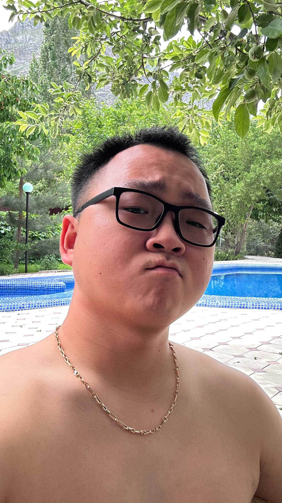

Если вы услышите имя Садыр Жопаров, не спешите искать президента. В данном случае речь идёт о Сергее Владимировиче Цое, более известном как Серик. Именно так он представляется нормальным людям. Однако Руслан однажды решил, что никакой он не Сергей, а самый настоящий Садыр Жопаров.
Серик любит три вещи: плов, пиво и себя. Причём расставить их по важности не представляется возможным.
Серику всего 22 года, но большинство людей при знакомстве уверены, что ему как минимум под 30. Ситуацию немного осложняет то, что Сергей постепенно начинает проигрывать битву за волосы.
Недавно он лишился желчного пузыря, но держится достойно. Сердце Серика занято, и, как утверждает он сам, каблуком он не является.

Несмотря на все обстоятельства, Серик остаётся человеком добрым и честным. Настолько честным, что врать у него получается примерно так же хорошо, как у Руслана перестать придумывать ему новые прозвища.
Главный страх Серика — Руслан. Поэтому в любой непонятной ситуации Сергей предпочитает сначала согласиться, а потом уже разбираться, что именно произошло.